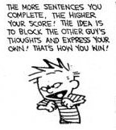

--Lao Tzu
There’s been a bunch of headshaking going on here at Mind-Tickler headquarters these last few months.
In part because, despite all the very intense human drama happening all over the world, a fair number of “spiritual” folks want to talk about the woo.
I mean, really want to talk about it. As in, non-stop talk about it.
Never mind virus, protests, fires, weather, wars, politics, conspiracies, and 8 billion different versions of daily life. Never mind pesky human experience.
All over social media, in podcasts, on youtube, are long-winded discussions about what is awakening, or if enlightenment actually is as expected, or if gurus should charge money to share their great wisdom. All over social media, designated sages asked unending questions, obliging with unending answers, about what they know about awareness, about realization of the self, about the “path,” and of course the number one topic, the I.
So many words of someday-maybe transformation, someday-maybe levels of attainment.
To the exclusion of all else. It seems the woo is the only thing that matters.
Clearly the emotional earth-bound mess of the human has no value, no interest, no truth of its own.
Although, there are so many words about spirituality, and so much avoidance of the difficult, it can almost start to look like there might be fear of the human experience.
Fear of smallness, imperfectness, total lack of any control. Fear of riotous, unharmonious, feelings and thoughts.
Yeah let's just skip that and instead git to talking about transcendent harmony and how to be more empty.
Now maybe the Tickler is being dramatic. Or maybe not. Because how else to explain the perpetual jabbering on about nonduality right now?
We might see though, that this obsession with realization is business-as-usual busywork for the mind. And that the constant compulsion to discuss it might, in itself, actually prevent the great enlightenment people are so devoted to finding.
Surprise! All the yammering about the nondual is just another way to stay rooted in self.
While denying what we also are.
Which is. human. Mind-driven, feelings-whipped, unevolved and illusory. Experiencer of the ten thousand things.
Human is where life actually happens, where we actually experience.
And yet we're intent on doing away with so much of it.
Seekers have lost touch with the value of existence as it is, discounting and talking ceaselessly about transcending it.
The thing is, when does consciousness get to indulge in a good fury, a lusty terror, a juicy pain?
Here's this amazing action film full of color and pathos and drama and violence and tear gas and rubber bullets, and there the seekers are, in the theater, trying to be above the film, nose deep in I am.
When does awareness get to experience the charged-up parts of its own movie, without humans trying to edit out all the color and No-Self it away?
When do we get to be, without talking or thinking about, and without trying to be something else?
Not that consciousness minds any of this, of course; it includes all that too.
It's just that whether enlightenment is attained or not, this film can’t be transcended. As long as we’re alive, we’re in it. We might know it’s a movie, we might watch the movie. But we're still in the movie.
Because we are both the self illusion and the no-self.
No amount of spiritual blah blah will pretend that away.
So maybe once in a while it’s possible to just live, un-analyzed, unfocused on the self's attainments. Being in this existence without all the talking and writing about, obsessing about what we are, compulsively trying to attain.
Who knows? We might find that ironically, paradoxically, the ability to experience that kind of silent and full-on presence with what is, without avoidance, could turn out to be the very enlightenment that's been sought.
Wouldn't that be something.
What a film.
What an experience.
There are
no words.
Click here to get your every week.
